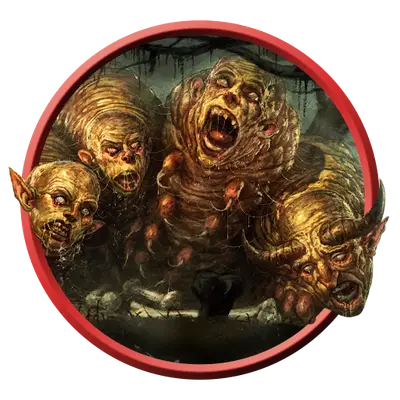

Рой ларв
Swarm of Larvae
Большой рой средних Исчадий, Нейтральное Злое

Класс Защиты 13 Инициатива +0 (10)
Хиты 22 (3к10 + 6)
Скорость 30 футов
| мод | спас | ||
|---|---|---|---|
| СИЛ | 14 | +2 | +2 |
| ЛОВ | 11 | +0 | +0 |
| ТЕЛ | 14 | +2 | +2 |
| мод | спас | ||
|---|---|---|---|
| ИНТ | 6 | −2 | −2 |
| МДР | 12 | +1 | +1 |
| ХАР | 2 | −4 | −4 |
Сопротивление урону Дробящий, Колющий, Рубящий
Иммунитеты Испуганный, Окаменевший, Опрокинутый, Опутанный, Очарованный, Ошеломлённый, Парализованный, Схваченный
Чувства Тёмное зрение 60 футов, пассивное Восприятие 11
Языки понимает все языки, но не говорит
Опасность 1 (200 опыта; БВ +2)
Особенности
Рой. Рой может занимать пространство другого существа и наоборот, а также может проходить через отверстия, которые достаточно велики для Среднего существа. Рой не может восстанавливать Хиты или получать Временные хиты.
Действия
Укус. Бросок рукопашной атаки: +4, досягаемость 5 фт. Попадание: 9 (2к6 + 2) Некротического урона, или 7 (2к4 + 2) Некротического урона, если стая Окровавлена.
Бонус мастерства +2
Среда обитания Нижние планы
Сокровища Отсутствуют
Ларвы
Участь падших душ
Души, обречённые на скитания по Нижним планам, нередко превращаются в ларв — омерзительных червеобразных существ с искажённой внешностью их прижизненного облика. Эти жалкие создания почти полностью беспомощны и стараются не привлекать внимание более могущественных обитателей своих планов. Многие Исчадия считают их деликатесом, а маги используют в своих порочных ритуалах. Ночные карги часто собирают и пасут ларв, а также торгуют ими с тёмными силами по всей мультивселенной.
Некоторым ларвам удаётся выживать на Нижних планах достаточно долго, чтобы в итоге превратиться в других представителей низших Исчадий.
По одиночке ларвы не так опасны, но в большом количестве они могут одолеть слабых противников. В отчаянии ларвы сбиваются в отвратительный рой, приближение которого выдают безмолвные всхлипы и тошнотворные звуки, будто от копошения червей.